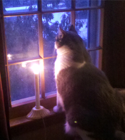
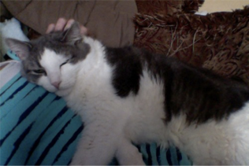
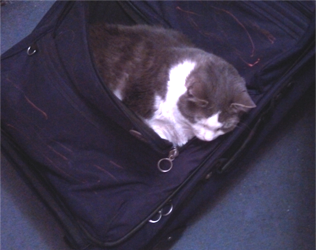

Hello Humans
My name is Pickle, and I will be keeping this diary to document the daily
struggles I face while my owner is away at college.
December 10th, 2014

It has been weeks since the last time Rachael came home. Where is she?
Will I ever see her again? These thoughts trouble me greatly. I will continue to keep watch for her, but kindling the fires of hope becomes more
and more difficult with each passing day. The other humans will not let me
sleep with them after I sat on their heads the other night.
I fear it will be a long winter.
December 17th, 2014

Rachael is home! She allowed me to nap on her all afternoon, and stayed
still the entire time so as not to rouse me from my dreams, a
consideration none of the other humans care to take. Then, when I awoke
in the throes of hunger, she followed me into the kitchen and fed me! Christmas has certainly come early this year.
December 26th, 2014
I have composed a haiku to summarize what I learned today.
Are video games
more important than snuggles?
If they are new: yes.
January 18th, 2015

The time has come for Rachael to leave once again. It was a wonderful month
while it lasted.
I have infiltrated her suitcase in the hopes that she will take me with
her, but alas I fear she is too intelligent for such a ploy. I will have
to begin preparing myself for another month of isolation in the event that
I am not successful.